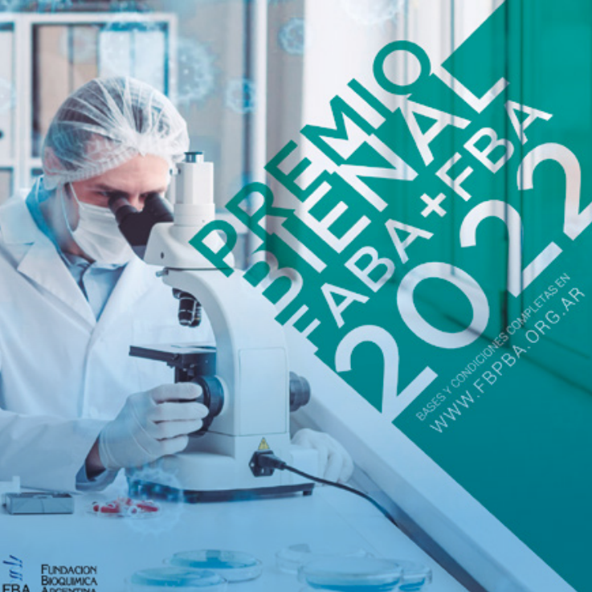

Acto de entrega de Premios Bienal FABA-FBA y PROES 2022
El pasado viernes 17 de marzo tuvo lugar el 9º Encuentro de ganadores de premios FABA/ FBA a partir de las 16 horas en el salón de actos de la Federación Bioquímica de la Provincia de Buenos Aires que además se transmitió en vivo por el Canal de Youtube de la Fundación Bioquímica Argentina.